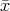
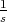
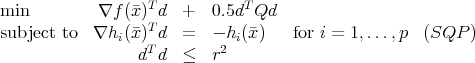
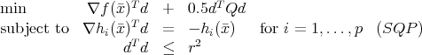
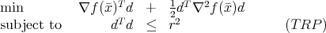
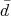
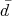
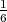
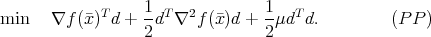

Let f : IRn → IR be a convex function.
- (5 points)
Let  IRn Since f is convex, it has a subgradient ξ( ) at . Give the subgradient
inequality satisfied by f(x) for any x IRn.
) at . Give the subgradient
inequality satisfied by f(x) for any x IRn.
- (20 points)
Define the function g(x,s) = sf(x), where x IRn and s is a positive scalar. Show that g is a convex function of x and s.
Consider the nonlinear programming problem
where f and each hi are functions from IRn to IR, and x IRn.
- (5 points)
Let IRn. Assume {∇h i(),i = 1,…,p} is a linearly independent set of vectors. What are the first order conditions that must be satisfied if is a local minimum? - The SQP subproblem to find a direction from a point is
 where Q is the Hessian of the Lagrangian and r is the radius of a trust region.
- (15 points)
Assume the feasible point satisfies the first order conditions with multipliers v IRp. Assume further that is a local minimum and satisfies the second order sufficient conditions for (NLP). Show that an optimal solution to (SQP) is d = 0. - (15 points)
To recap from Part A, we have the nonlinear programming problemwhere f and each hi are functions from IRn to IR, and x IRn. Further, the SQP subproblem to find a direction from a point was given as
 where Q is the Hessian of the Lagrangian and r is the radius of a trust region.
Let n = 2, p = 1, and r = 5. Let f(x) = 20e0.3x1-0.4x2 and h(x) = -x 12 - x 22 + 25. The feasible point x = (3,-4) satisfies the first order KKT conditions with multiplier v = e2.5. Show that the optimal solution to (SQP) is nonzero.
- (15 points)
We want to solve the unconstrained problem
The gradient and Hessian of f are
Let = (2, 1).
- (10 points)
Show that the Newton direction is not a descent direction at . Consider using a matrix Q instead of ∇2f(x) in the definition of the Newton direction. What must Q satisfy in order to ensure that the resulting direction is a descent direction? - (10 points)
A direction can also be found by using a trust region scheme: Consider the general case, for any f(x). Let  be a global optimal solution to this problem. Show that  T ∇f() ≤ 0.
- (10 points)
Return now to problem (UNLP). Let r = 10 in (TRP) and let solve (TRP). Show that f( + ) > f(). How would you suggest using to find a new point? (Hint: It is not necessary to solve (TRP). Note that f(2, 1) = 11, and that if x1 > 7 or x1 < -3 then f(x) > 20.) - (10 points)
Now consider choosing a step in (UNLP) from = (2, 1) using a proximal point approach, so we find d by solving Let μ = 4.4 and let solve (PP). Show that f( + ) > f(). (Hint: Note that f(2, 1) = 11, and that if x1 > 7 or x1 < -3 then f(x) > 20.)